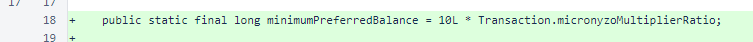
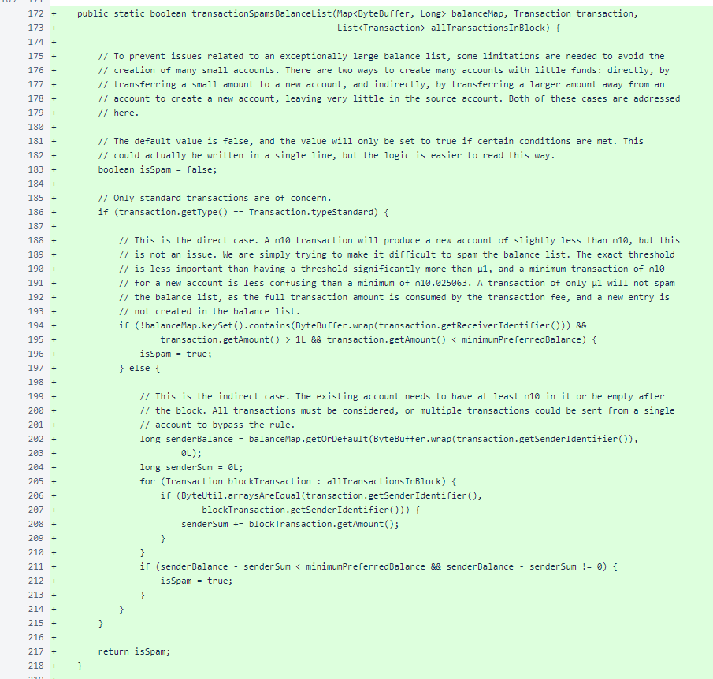
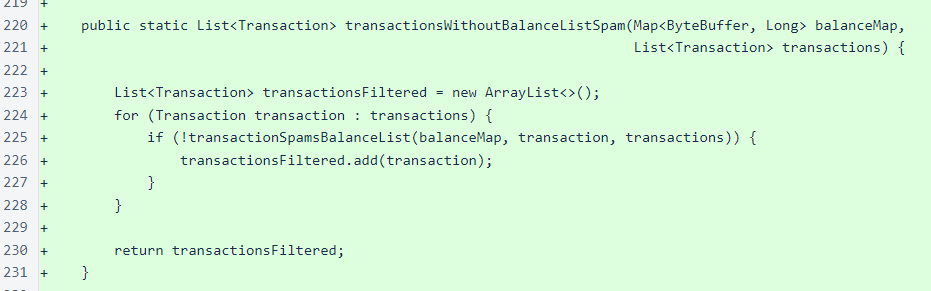
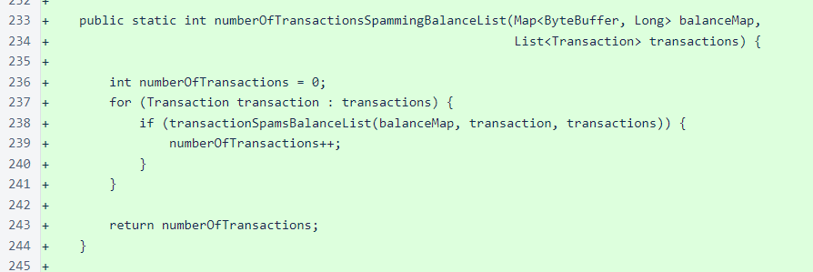
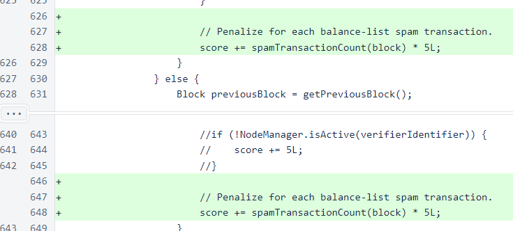
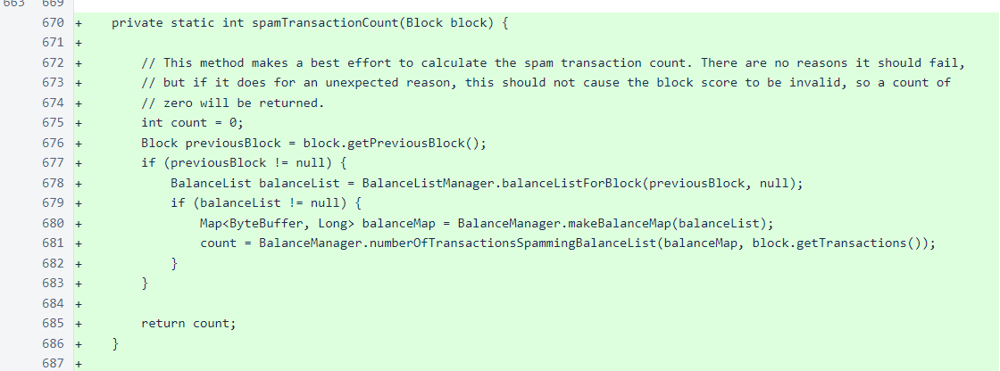
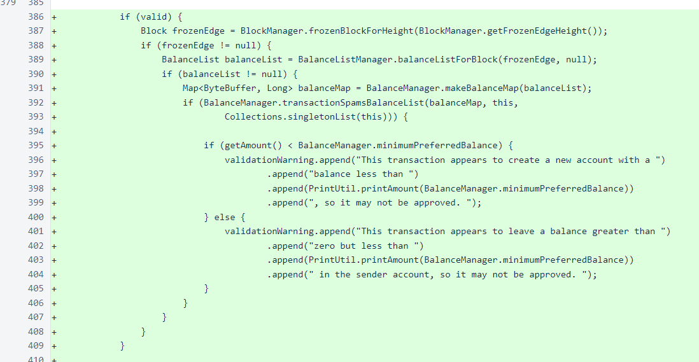
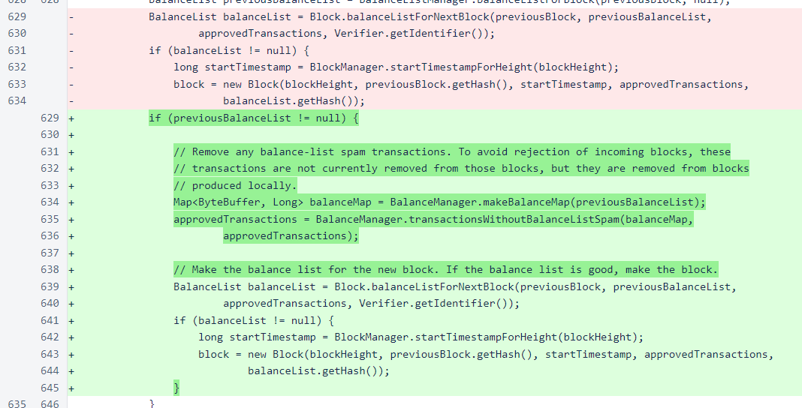

Nyzo version 493 (commit on GitHub) adds mechanisms for eliminating transactions that could be used to add many small accounts to the balance list.
This version does not affect the sentinel, as the sentinel does not process incoming transactions or score incoming blocks. However, it does affect the verifier significantly, and a timely upgrade to this version is recommended.
In Nyzo, a list of all accounts in the system is produced with every block, and the hash of this list is stored in the block. To limit this list to a reasonable size, this version adds some rules to filter out transactions that might be used to create many small accounts in the system. This is a temporary measure that will keep the system running smoothly and provide more time for community involvement and feedback for possible changes in transaction and account fees. The modifications in this build are all external to block and balance-list creation, so they do not introduce the compatibility issues or potential of a blockchain fork that such fee changes will inevitably introduce.
These changes do, however, present the possibility that blocks produced by earlier versions of the verifier might have inferior scores that could lead to removal of a verifier from the cycle. If such blocks were produced, the sentinel would protect such a verifier against removal, but for the overall health of the system, we recommend that all verifiers upgrade to this version as soon as possible.
In the BalanceManager class, a constant for minimumPreferredBalance was added. As the name indicates, this is not a hard minimum, and there are several ways that accounts with lower balances could be present in the system.
The core of this update is the transactionSpamsBalanceList() method of the BalanceManager class. This method identifies transactions could result in the creation of many small accounts from a small coin supply.
The two types of transactions identified by this method are direct, in which a new account would be created with a small balance, and indirect, in which a small balance would be left in an account. Only standard transactions are considered. While seed transactions could be used to quickly create a small account, all coins leaving the account would be in the form of account fees, so this is not an effective attack.
Outgoing transfers that leave a low-balance account are considered spam even when they go to an existing account. This is because the coins could be transferred to new accounts, transferred back to existing accounts, and then mostly reused (with a small loss to transaction fees and the small sum left in new accounts) to create additional accounts.
Comments in the code provide additional detail.
The transactionsWithoutBalanceListSpam() method filters transactions considered to be spam from a list of transactions. It is used for blocks produced locally.
The numberOfTransactionsSpammingBalanceList() method provides a count of transactions considered to be spam in a list of transactions. It is used when scoring blocks produced by other verifiers.
In the chainScore() method of the Block class, the number of spam transactions in an incoming block increases the score of that block. A penalty of 5 points is applied for each spam transaction present in the block, and this is applied to blocks produced by both new verifiers and existing verifiers.
The spamTransactionCount() method provides the number of spam transactions in a block. It makes a balance map of the previous block's balance list and invokes the BalanceManager.numberOfTransactionsSpammingBalanceList() method to determine the count.
In the performInitialValidation() method of the Transaction class, a warning has been added for transactions that might be spam. This does not affect the processing of the transaction; it is only a warning.
In the Verifier class, balance-list spam transactions are now filtered out just before creation of blocks.
